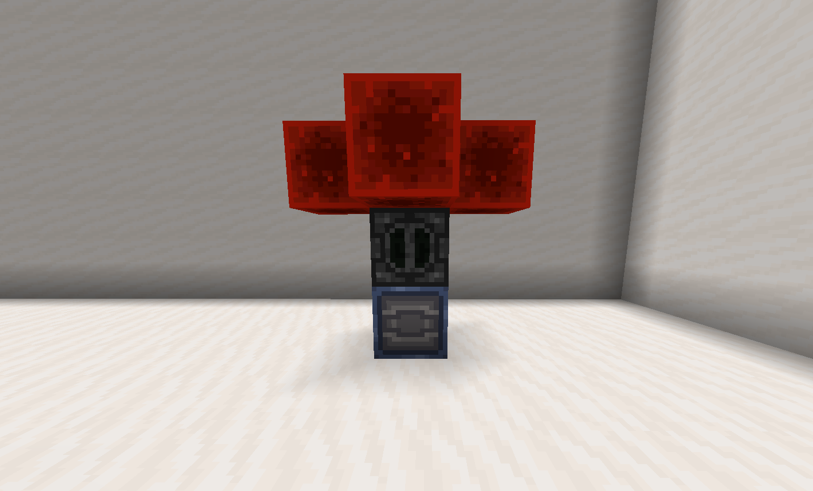

Resonant machines are special multiblock structures that require resonant power to work, however, the
extra work is more than worth it.
Something important to note is that you can't just connect a battery/capacitor to a machine, as they
actually require resonant pulses to activate them, see Resonant
management for how to generate pulses.
Powered vacuum
Powered vacuums are essentially extended hoppers, collecting any item in a 3-block radius.
Required blocks
Hopper
1
Dropper (input/output)
Radar
Radars tell any player within a 4-5 block radius how close other players are to the gold block
of the radar, the more iron bars you use the higher the range.
Required blocks
Redstone torch
1
Iron block
Iron bars
1-64
Gold block (input)
1
Tesla coil
Tesla coils can provide buffs to friendly players, or act as a passive defence, depending on what armour
you are wearing, the more iron bars used in a 5-block radius of the beacon the higher the range.
Diamond/Leather armour = Full immunity, no buffs or debuffs.
Gold armour = No debuffs, Swiftness 2, Regen 2, And repairs armour.
Any netherite/iron armour = Amplified damage, Netherite will also spread the effect to nearby
players/entites.
Standing on Gold blocks or Iron blocks, bars, doors, or trapdoors, will summon lightning onto that
block.
Iron golems will gain regen 1
Required blocks
Beacon
1
Iron bars
1+
Gold block (input)
1-12
Industrial machines
These machines are generally used in factories, mostly used to turn common materials into more valuable
ones.
Prismatic converter
Prismatic converters generate prismarine crystals (used to power shields) off of resonant pulses.
Required blocks
Redstone lamp
2
Redstone blocks
Aluminum blocks (custom)
4
Composite blocks (custom)
2
Dispenser (output)
1
Amount per pulse
2 crystals
Materials refinery

Materials refineries refine common/easy to get item's into more valuble ones, such as rotten flesh to charcoal.
Recipes
Ingredient(s)
Result
9 Rotten flesh
1 Charcoal
2 Wheat
4 Wheat dough
16 Wheat dough + 1 Milk/Water bucket
8 Wheat batter
4 Bone
1 Charcoal
1 Bone block
5 Charcoal
12 Bonemeal
3 Charcoal
8 Amethyst shards + 2 Redstone dust
4 Crystallized radon
8 Sweet berry + 1 Brick
One of Red dye, Brown dye, Purple dye, Magenta dye, Pink dye. + 1 Brick
1 Cobblestone
A set amount of items from a pool of Iron nuggets, Gold nuggets, Charcoal, Gray dye, Bonemeal, Flint, Clay, Gravel, and Sand.